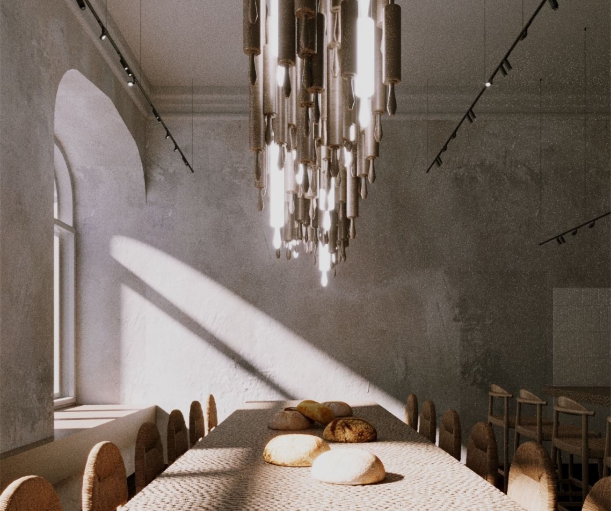

TFlab – это место, где прошлое встречается с настоящим, а традиции обретают современное звучание. Мы вдохновляемся классическими рецептами, добавляя к ним нотки креативности и новые вкусы. Каждое наше изделие – это не просто выпечка, а история, которую мы создаем с душой, чтобы объединять людей и задавать настроение.
Добро пожаловать в TFlab – где каждый кусочек пахнет заботой, а каждый день начинается с радости!